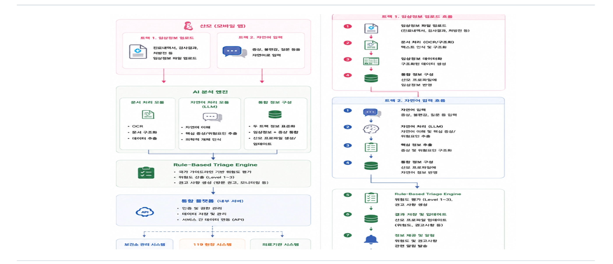
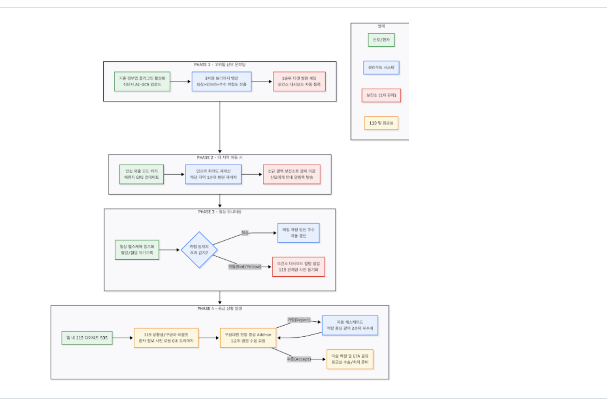
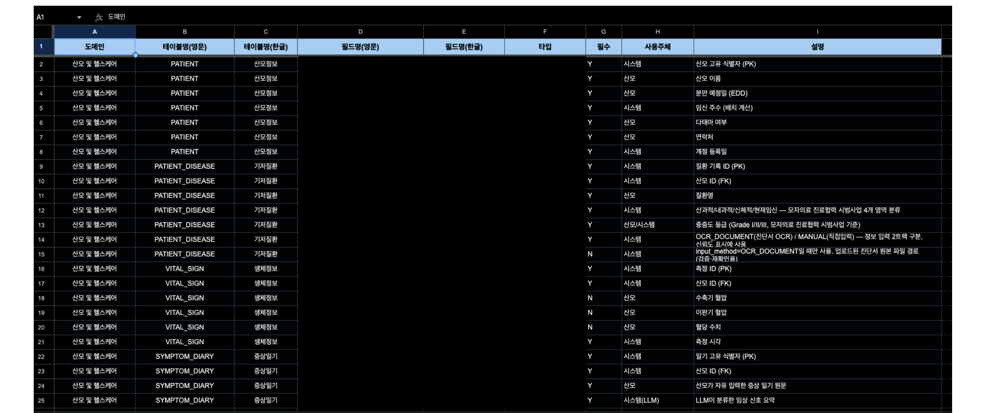
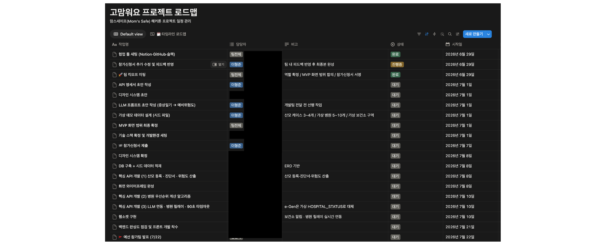

지역 분만 인프라 격차 문제에서 아이디어를 발안하고 5인 팀을 직접 구성, 요구정의부터 데이터 설계·서비스 흐름 설계까지 기획 전 과정을 단독으로 총괄한 기록.
지역별 분만 인프라 격차와 산모 위험 관리 공백이라는 문제에 착안해 서비스 아이디어를 발안함. 분만취약지 지원사업·모자의료 진료협력 시범사업 등 정책자료와 지역별 분만건수· 의료인프라 통계자료를 직접 조사해 문제를 구체화함. 이 아이디어에 공감하는 간호사 1인, 개발자 2인, 디자이너 1인을 직접 섭외해 5인 팀을 구성했으며, 팀 내 유일한 기획 인력으로서 주제 선정부터 참가신청서 제출까지 기획 전 과정을 총괄함.
| 산출물 | 내용 |
|---|---|
| 기능정의서 | 전체 화면 16개의 컴포넌트·비즈니스 로직·유효성 검사 규칙·ERD 연관 테이블을 정의한 프론트·백엔드 공동 참조 문서 (v1.0→v3.1, 4회 개정) |
| 화면목록 · 화면설계 | 산모 앱(8종)·보건소 대시보드(4종)·119·병원(4종), 총 16개 화면의 와이어프레임과 색상·배지·버튼 등 디자인 시스템을 직접 설계 |
| ERD | 산모정보·기저질환·생체정보·증상일기 등 도메인별 테이블, 필드, 필수 여부, 사용 주체 정의 |
| 유저플로우 · 서비스흐름도 | 고위험 산모 온보딩부터 응급 이송까지 4단계(Phase 1~4) 흐름 설계 |
| LLM 프롬프트 초안 | 증상일기(자연어) → 예비 위험도 분류를 위한 프롬프트 설계 및 임상 기준 변경 반영 개정 |
| 참가신청서 · 개정이력 관리 | 해커톤 참가신청서 작성·제출, 전 문서의 버전별 변경 이력 관리 |
산모 앱의 임상정보 업로드·자연어 증상 입력을 AI 분석 엔진과 Rule-Based Triage Engine으로 연결해, 보건소·119·의료기관까지 이어지는 구조를 설계함.




임상 데이터 기반 "실제위험도"와 LLM 증상일기 기반 "예비위험도"를 앱·대시보드 전반에서 항상 함께 노출하도록 설계함. 예비위험도는 최근 7일 입력이 없으면 자동으로 숨겨, 정보의 신뢰도가 낮아지는 상황을 화면 단위에서 관리함.
진료정보 입력을 진단서 OCR·직접 입력 2트랙으로 나누되, 기본 탭을 OCR 트랙으로 두어 신뢰를 우선 확보하도록 설계함. 두 트랙 모두 동일 테이블에 저장되며 입력 방식 필드로 구분해 데이터 정합성을 확보함.
119 SOS 발송 시 병원 1→2→3순위로 자동 릴레이하고, 90초 미응답 시 다음 순위로 자동 전환되는 규칙을 상태 표시(Step Indicator)로 설계해 담당자가 진행 상황을 실시간으로 확인할 수 있도록 함.
아이디어 발안, 팀 구성, 요구정의, 데이터 설계, 서비스 흐름 설계까지 기획자로서 전체 사이클을 단독으로 총괄함.
예선 통과라는 결과에는 이르지 못했으나, 임상 기준 변경 등 외부 요건 변화에 맞춰 산출물을 세 차례 개정하며 완성도를 높이는 과정을 실제로 수행함.
프로젝트를 마치며